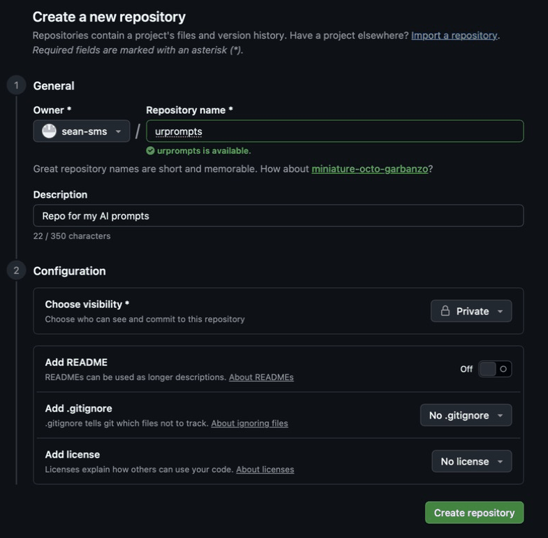
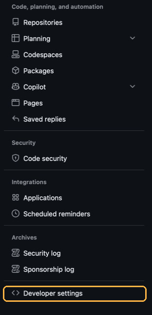
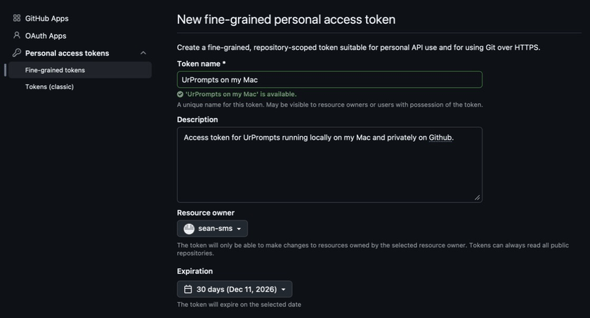
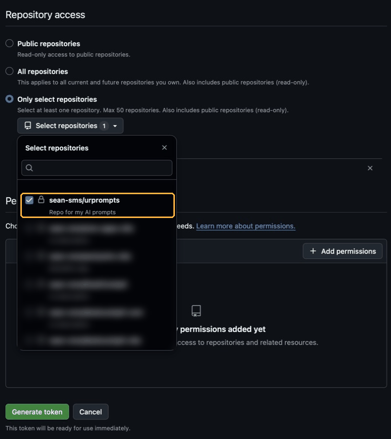
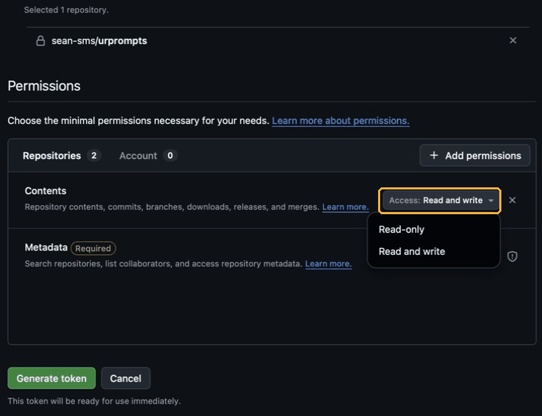

Set up sync
Sync keeps the same prompts on every Mac you use. It runs on a private GitHub repository, which is free, and you never have to touch Git yourself — the app does that part.
About ten minutes, once. UrPrompts works perfectly well without it; set this up only if you use more than one Mac, or you want an off-machine copy of your prompts.
Before you start
- A GitHub account. Free, and the free plan includes unlimited private repositories.
- UrPrompts installed, with a library folder already chosen.
The six steps
- Create a GitHub account Go to github.com/signup and sign up. Skip this if you already have an account.
-
Make a private repository
On GitHub, click + at the top right, then New repository. Name it
urprompts. Choose Private — this matters, and UrPrompts refuses to sync with a public one. Leave every "Initialize this repository" box unticked, so it starts empty. Click Create repository.
Private, and all three “Add…” options left off, so the repository starts empty. -
Create a token
A token is how the app proves it's allowed in. On GitHub: your avatar → Settings → Developer settings (very bottom of the left sidebar) → Personal access tokens → Fine-grained tokens → Generate new token. Fill it in like this:

Developer settings is the very last item in the sidebar, below Archives. Scroll right to the bottom. - Token name: anything you'll recognise later, such as "UrPrompts on my MacBook".
- Expiration: your choice. When it runs out, sync stops until you make a new one — see below.
- Repository access: Only select repositories, then pick your
urpromptsrepository. - Permissions → Repository permissions → Contents: set to Read and write. That's the only one you need to change.

Name it something you'll recognise on another machine. The expiry is up to you. 
Pick Only select repositories and tick just urprompts. Your own list will look different.
Contents: Read and write is the only permission to change. Metadata is added for you. Copy the token straight away. Click Generate token and copy what GitHub shows you. It is shown once and never again — close that page without copying it and there is no way to get it back, only to generate a new one.
-
Paste it into UrPrompts
Open UrPrompts and press ⌘, for Settings, then the GitHub sync section. Put the repository's web address in Repository — it looks like
https://github.com/yourname/urprompts. Leave Branch asmain. Paste the token into Access token and click Save. - Click Sync Now Your prompts travel up to the repository. The status line next to the button tells you what happened.
- Set up your second Mac Install UrPrompts there and choose an empty folder for its library. Enter the same Repository and Branch, generate a second token for that machine, and click Sync Now. Your prompts arrive.
Give each Mac its own name in Settings → Library → This device's name. It's how you tell the two apart if the same prompt is ever edited in both places.
Keep it running by itself
In the same Settings section, switch on Sync automatically and choose how often. Most people leave it at a few minutes and forget it exists.
When the token expires
Sync stops and the status line says so. Nothing is lost — your prompts are on your Mac, and your changes are saved locally in the meantime. Make a new token exactly as in step 3, paste it into Access token, click Save, then Sync Now.
Common questions
Do I need to understand Git?
No. The app runs Git for you. The repository is useful to know about for one reason only: it's a complete history, so an older version of any prompt can be recovered later.
Does this cost anything?
No. Private repositories are free on GitHub's free plan, and your prompts are small text files.
What happens if I edit the same prompt on both Macs?
Neither version is thrown away and the two are never blended into something you didn't write. The machine doing the sync keeps its own version, and the other machine's version arrives beside it as a flagged copy. A Conflicts section appears in the sidebar, and you choose: keep this one, keep the other, or keep both as separate prompts.
Can I use a repository I already have?
Yes, as long as it's private. An empty one is simplest. If it already has files in it, they'll be mixed in with your prompt library, so a fresh repository is usually the cleaner choice.
Where does the token live? Is it safe?
It goes into the macOS Keychain and nowhere else. It is never written into your library folder, into Git's configuration, or into a command the app runs. Before syncing, the app asks GitHub whether the repository is private, and refuses to sync if it isn't, or if it can't get an answer.
Can I get at my prompts on a PC?
UrPrompts is Mac-only today. The repository is just Markdown files, so you can read and edit them anywhere — on github.com, or in any text editor after cloning. Let the Mac do the syncing, though: plain git pull elsewhere uses Git's own merging, which can blend two versions of a prompt into text neither of you wrote.
Something went wrong and I want to start over.
Delete the repository on GitHub, make a fresh private one, and point UrPrompts at it. Your prompts live in your library folder on your Mac, so nothing is lost by doing this.
Still stuck?
Write to support@sms-apps.com and say which step you're on and what the status line says. A real person reads every message.